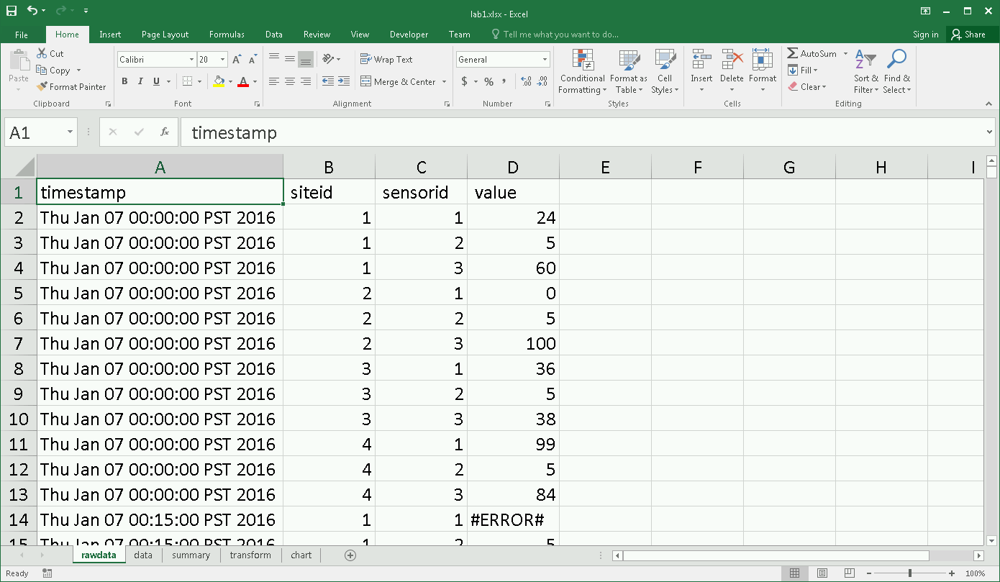
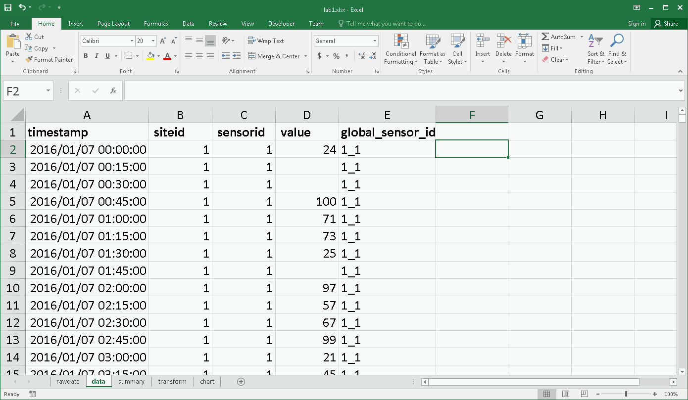
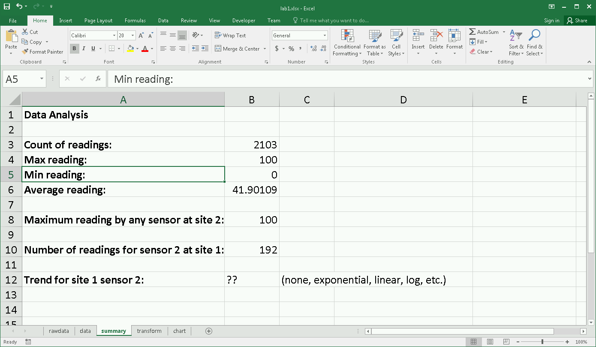
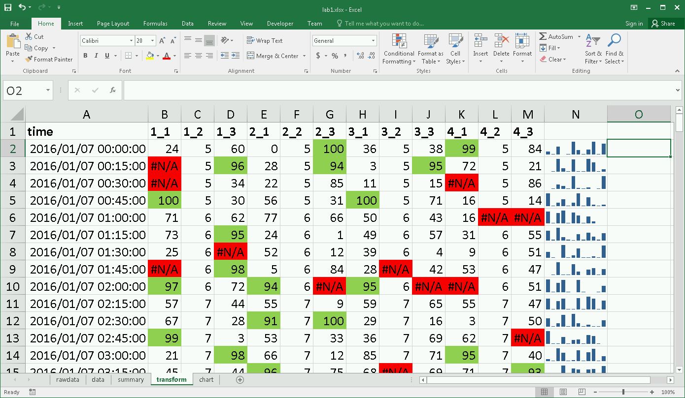
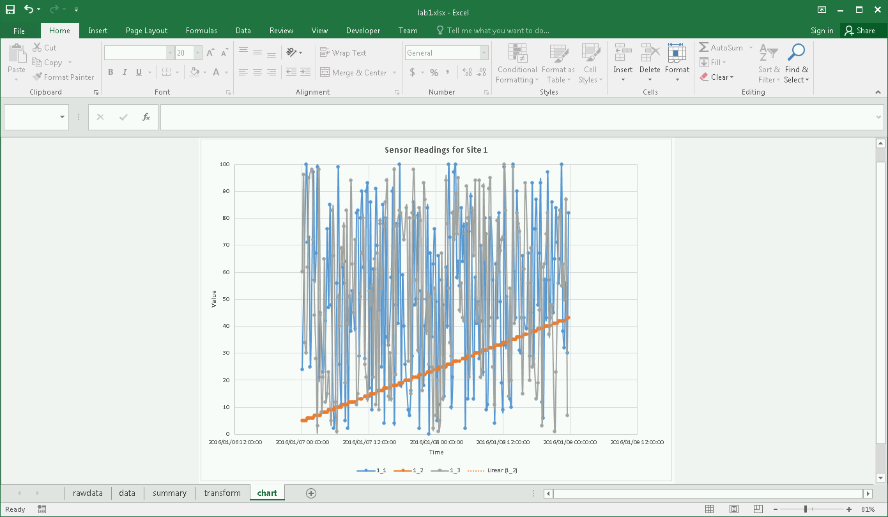

DATA 301 - Introduction to Data Analytics
Lab 1: Excel - Analyzing and Reporting Data
In this lab, we will use Microsoft Excel to manipulate, transform, and analyze data.
Objectives
- Load CSV data into Excel and convert into a spreadsheet for processing.
- Perform simple data cleaning (missing, incorrect) values, data type conversion, and cell formatting.
- Understand and use Excel cell addressing including absolute addresses.
- Create formulas including string and date functions, aggregate functions, and formulas with decisions.
- Perform sorting and filtering to transform data for analysis.
- Produce charts to visualize data and communicate results including using trendlines and sparklines.
Analysis Problem and Goals
This scenario involves analyzing data collected by sensors and applies to a variety of real-world applications including environmental monitoring (temperature, precipitation, wind, etc.), industrial and production sensors, and even monitoring of people using mobile devices and GPS. There are multiple monitoring sites. Each site has one or more sensors that take a reading in a given interval. Typically, readings are either an integer or floating-point value. In this lab, each reading will consist of:
- timestamp - when the reading occurred
- siteid - an integer identifying a site uniquely
- sensorid - an integer identifying a sensor at a particular site uniquely
- value - an integer reading between 0 and 100, although data may be missing or incorrect
Sensor readings are done every 15 minutes but may be missed (no data) or contain incorrect values out of range (less than 0 and above 100) or values that indicate error conditions (not at a number at all).
Click here to download the data set that consists of 4 sites each with 3 sensors that take readings every 15 minutes for 2 days.
Goals
The analysis goals are:
- Loading - load the input CSV file into Excel and convert into an Excel spreadsheet file.
- Cleaning - take the raw data and remove missing/incomplete values and convert the time currently in string form to an Excel datetime.
- Summary - calculate summary statistics for the data set including number of readings, maximum/minimum values, and readings for particular sensors.
- Transformation - transform the data set so that it is easier to analyze by creating a table where each row has a timestamp and readings in each column for every sensor at the site at that time.
- Visualization - create a chart that shows the sensor readings by time with trendlines.
- Analysis - will determine if there are any trends for the three sensors at site 1.
Marking and Evaluation (15 marks)
Marks are awarded by precisely following these requirements:
- Loading (1 mark) - submit an Excel file called lab1_(yourstudentnum).xlsx (e.g. lab1_11111111.xlsx) where the first sheet is called rawdata and contains the loaded data set with no changes.
- Cleaning and Formatting (5 marks) - create a second sheet called data that contains the data set after all incorrect and out-of-range values have been removed.
- Any data that is not a number, is less than 0, or above 100 should be replaced by an empty string ("") (1 mark). Hint: May need to use IF function.
- Header fields must be in bold font (0.5 marks).
- Timestamp field must be formatted as a date field in this format yyyy/mm/dd hh:mm:ss (2 marks). Hint: May need to use DATEVALUE function and function like MID to convert date. More info. Note that both the DATE and TIME need to be converted and added together to get a DATETIME.
- Data must be sorted by siteid (ascending), sensorid (ascending), then timestamp (ascending) (0.5 marks).
- Add a column called global_sensor_id that is generated by siteid&"_"&sensorid (1 mark).
- Summary (3 marks) - create a third sheet called summary that contains the following items:
- Count of readings in B3, maximum reading value in B4, minimum reading value in B5, average reading in B6 (1 mark).
- Maximum reading by any sensor at site 2 in B8 (1 mark). Hint: Ctrl+Shift+Enter will be useful. See: Array Output using Ctrl+Shift+Enter
- Number of readings for sensor 2 at site 1 in B10 (1 mark). Note: Include all readings including readings that were out of range/errors/blank.
- Transformation (3 marks) - create a fourth sheet called transform that contains a table where each row is a time and each column contains values for the sensor.
- Creating data table (1 mark).
- Replacing missing values with NA() (0.5 marks). More info and Using ISNA() function
- Adding sparklines in last column for each row (0.5 marks).
- Add conditional formatting so that cells with #N/A are filled in red and cells with values >= 90 are filled in green (1 mark).
- Visualization (2 marks) - create a XY Scatter chart (with smooth lines and markers) on a sheet called chart that shows the readings by time for all three sensors at site 1. Add an appropriate trendline for sensor 2 at site 1.
- Analysis (1 marks) - in the summary sheet put in cell B12 if sensor 2 at site 1 has any data trend (none, exponential, linear, etc.).
When complete, submit your Excel file named lab1_(yourstudentnum).xlsx (e.g. lab1_11111111.xlsx) using Connect.
Screenshots
rawdata sheet

data sheet

summary sheet

transform tab

chart sheet

 Home
Home